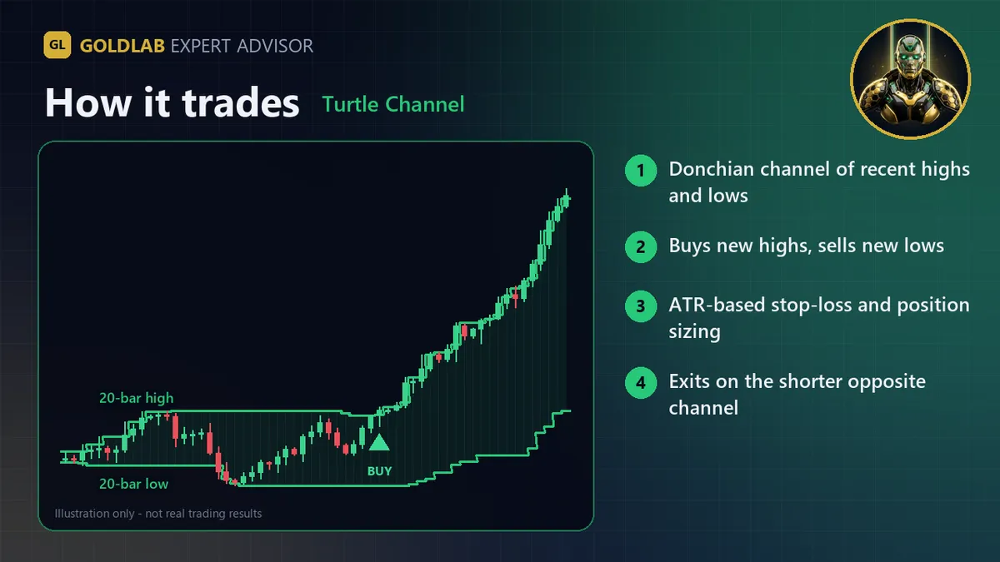
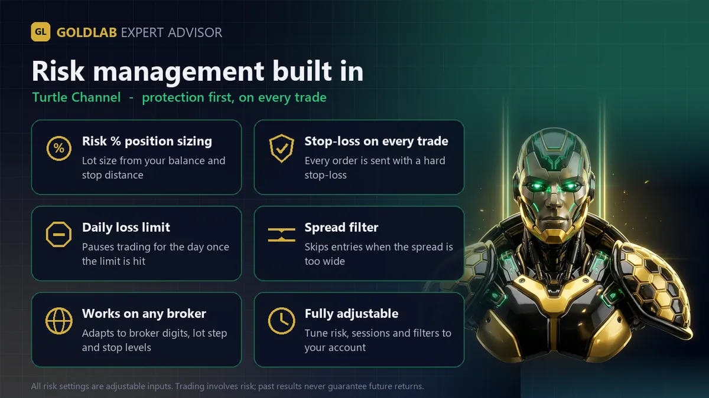

GoldLab Turtle Channel is an Expert Advisor based on the well-known Turtle trading rules: buy new highs, sell new lows, size positions by volatility and let winners run. It was designed for XAUUSD (Gold) and also runs on forex pairs, indices and other CFDs. Every trade has a stop-loss.
How it trades
- Entry: a closed bar beyond the Donchian channel - System 1 uses the 20-bar high/low, System 2 the 55-bar high/low, or set your own lengths.
- N (volatility): the ATR (default 20). The initial stop-loss is 2N from entry.
- Pyramiding (optional, hedging accounts): adds a unit every 0.5N in profit from the last unit, up to the maximum number of units (default 2). When a unit is added, earlier stops are raised to the new unit's stop.
- Exit: all units are closed when a bar closes beyond the opposite exit channel - the 10-bar low/high for System 1, 20-bar for System 2. An optional fixed take-profit in N can be added.
- Signals are evaluated once per closed bar of the signal timeframe.
Risk management
- Risk % per unit (default 1% of equity) - the lot is calculated from the 2N stop distance. With 2 units the total open risk is up to 2x this value. A fixed lot can be used instead.
- Daily loss limit (default 3% of the day-start equity).
- Maximum spread filter and optional trading hours.
- Free-margin check, broker volume limits and stop/freeze levels are respected before every order. On netting accounts pyramiding is switched off automatically and the EA never adds to or reverses a position opened by something else.
Inputs and default settings
| Group | Input | Default | Meaning |
|---|---|---|---|
| Strategy | Signal timeframe | H1 | Timeframe for the channels (chart timeframe can be anything) |
| Strategy | Breakout system | System 1 | System 1 (20/10), System 2 (55/20) or Custom |
| Strategy | Custom entry / exit length | 30 / 15 | Used only with Custom |
| Strategy | N = ATR period | 20 | Volatility measure |
| Strategy | Allow longs / shorts | true / true | Direction filter |
| Stops | Stop-loss (x N) | 2.0 | Initial stop distance |
| Stops | Take-profit (x N) | 0 | 0 = none, exit on opposite channel |
| Stops | Pyramiding / Max units / Add step (x N) | true / 2 / 0.5 | Unit adding |
| Stops | Raise earlier stops | true | Move older stops up when a unit is added |
| Position size | Risk % / Fixed lot / Max lot | 1.0 / 0 / 10 | Position sizing (per unit) |
| Safety | Daily loss limit % | 3.0 | 0 = off |
| Safety | Max spread (points) | 50 | 2-digit gold scale: 100 = 1.00 USD |
| Safety | Use hours / Start / End | false / 1 / 22 | Optional server-time window |
| Safety | Magic number | 26100701 | Change it to run several copies on one symbol |
Recommended setup
- Symbol: XAUUSD (or your broker's gold symbol). Signal timeframe: H1 or H4 (System 2 suits H4/D1).
- Hedging account for pyramiding; netting works with single units.
- Start on a demo account with the default 1% risk and test the settings in the Strategy Tester with your broker's data first. A VPS is recommended for 24/5 operation.
Honest notes
No martingale, no grid, no averaging down - units are only added to a winning position, and every position has a stop-loss. Breakout systems have many small losses from false breakouts and rely on fewer, larger trends; expect losing streaks. Trading gold, forex and CFDs is high risk and you can lose your capital. No trading system wins every trade, and past or backtested results do not guarantee future results. Only trade money you can afford to lose and always test on a demo account first.


Plan your risk before you run it
- Check the lot the EA will use for your balance and stop with the XAUUSD lot size calculator and the margin calculator.
- Compare targets and stops with the risk reward calculator.
- Risk Per Trade: the 1% Rule with Gold Examples
- Best Timeframe for Gold Trading: Pros and Cons
- How to Install an EA in MT5, Step by Step
FAQ
Does the Turtle Channel EA add to positions?
Yes, on hedging accounts it can add a second unit after the trade has moved 0.5N in profit (default on, maximum 2 units, switchable off). Units are only added to a winning position, earlier stops are raised, and on netting accounts pyramiding is switched off automatically. It never averages down.
Is there a free demo?
Yes. Every MQL5 Market product has a free demo that runs in the MetaTrader 5 Strategy Tester, so you can test it on your broker's own data before buying.
Does it use martingale, grid or averaging down?
No. Every position is opened with a stop-loss, the lot size comes from your risk % (or a fixed lot), and there is a daily loss limit.
Which broker and account do I need?
Any MetaTrader 5 broker that offers XAUUSD, on a hedging or netting account. A low-spread account and a VPS for 24/5 operation are recommended.
Can this EA guarantee profits?
No. No trading system wins every trade, and backtest or past results do not guarantee future results. Start on a demo account with the default risk.
Trading gold, forex and CFDs is high risk and you can lose your capital. This page is for information only and is not investment advice. Illustrations are not trading results.